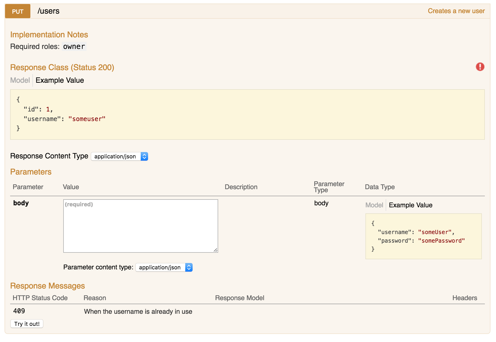

Generating Swagger documentation for an Express API
In the process of finishing up an Express project, I wanted to leave a nice set of documentation for future users and/or maintainers of the API. I wanted the documentation to live next to the code, and the tooling to generate a nice site from it. Finally I settled for Swagger and used a combination of packages to get the job done.
There were several things I was expecting from the documentation:
- To live in comments next to the code, so it would be easier to remember to update it when needed.
- To generate a decent enough site for navigating it.
- To be able to test the API through that generated site.
- To support making authenticated requests.
- Avoid owning the code for the UI.
Parsing the comments
Let's begin by being able to extract Swagger-formatted documentation from comments in the code. The swagger-jsdoc project does exactly that and generates a big object containing the description of the whole API. The setup is fairly straightforward if we ignore Swagger specifics:
const swaggerJSDoc = require('swagger-jsdoc');
const spec = swaggerJSDoc({
swaggerDefinition: {
info: {
title: 'Project title',
version: '1.0.0'
},
produces: ['application/json'],
consumes: ['application/json'],
securityDefinitions: {
jwt: {
type: 'apiKey',
name: 'Authorization',
in: 'header'
}
},
security: [
{ jwt: [] }
]
},
apis: [
'lib/routes/*.js'
]
});
The generator function receives an options object with two important properties:
swaggerDefinitionwill include Swagger's global options, which can be found on its specification under “Schema”.apiscontains an array of paths thatswagger-jsdocwill try to parse.
I hadn't used Swagger before starting with this documentation, so I'll write up about some useful properties I've been learning along the way with references to their specs:
infocontains metadata about the API. Its contents are a Swagger Info Object.producesandconsumesare array of mime types that the API responds with and accepts, respectively. They can be set for each endpoint, but since the API I'm working on uses mostly JSON it was useful to set them as a global default.securityDefinitionsspecifies the way the user has to authenticate to use the API. The project uses JWT for authentication (which I talked about in a previous post) so I set it up according to Swagger's security definition. It basically means that the API expects a key on theAuthorizationheader.security, similar toproducesandconsumes, can be set per endpoint - but since most of the API requires authentication, I specify it globally and override it when needed. It's an array of security requirements objects which for this kind of authentication means just listing the required security definitions.
Writing the documentation
With that setup, the next step is to write some documentation for the endpoints. swagger-jsdoc doesn't expect the comments to be placed anywhere specific, as long as they are somewhere in the files included by the paths defined in the apis option, so in this case I want each endpoint definition to have its documentation right above it. Let's go with a fairly comprehensive example:
/**
* @swagger
* /users:
* put:
* summary: Creates a new user
* description:
* "Required roles: `admin`"
* tags:
* - Users
* parameters:
* - name: body
* in: body
* required: true
* schema:
* type: object
* required:
* - username
* - password
* properties:
* username:
* type: string
* password:
* type: password
* example: {
* "username": "someUser",
* "password": "somePassword"
* }
* responses:
* 200:
* schema:
* type: object
* properties:
* id:
* type: integer
* username:
* type: string
* examples:
* application/json: {
* "id": 1,
* "username": "someuser"
* }
* 409:
* description: When the username is already in use
*/
router.put('/', restrictToRoles('owner'), createUser);
Most of the structure is self-explanatory. The YAML structure begins with the endpoint's route, and includes one or several HTTP verbs. In this case since I'll document each verb on a separate comment, it will always have one verb. Then follows a short summary of the endpoint's purpose and an optional description. I've used the description field to document the required roles since Swagger only supports roles (actually scopes) properly when using OAuth authentication. Next we assign tags to the endpoint, which will be used to group related endpoints in the UI.
Then things get a little bit more complex. Parameter objects in Swagger include all parameters from query string parameters to headers, passing through form fields, path parameters and request bodies. In this case, we expect to receive the data for the new user on a JSON body. Even though there are several fields that our endpoint needs, they're all defined inside the single body parameter's schema. The schema object is probably the most complicated part of the Swagger spec that I had to deal with yet, but the basics are simple enough. You define a type for it, and if it's an object or an array you include a properties or items property respectively, describing the shape of its elements. In this case we expect an object with username and password. We could add a description field for them but they are self explanatory.
responses lists the possible response codes for the endpoint, with an optional schema property to describe the response format. With everything defined, eventually our UI will look similar to this:

See that red warning sign to the right? That means that the endpoint is secured (because we defined that to be the default) and clicking on it allows us to set the Authorization header to make authenticated requests by clicking on the “Try it out!” button. Let's see how to create that UI now.
Generating the documentation site
swagger-ui-express will do just that for us. With a very simple API, given the object with the API definition that swagger-jsdoc created, it can be set up on a route and serve that documentation:
const swaggerUi = require('swagger-ui-express');
/**
* Assuming we have a `router` here and the `spec` generated by swagger-jsdoc...
*/
router.use('/docs', swaggerUi.serve, swaggerUi.setup(spec));
And as simple as that, our documentation now lives under the /docs endpoint. All the files for the site are owned by swagger-ui-express, so maintainers of the project don't have to worry about keeping it updated.
I did make a little tweak to that configuration above. By default, the generated site will show the URL of an example JSON spec on its input field at the top. While it still works correctly, I set the route up so that it will add a query parameter to my actual JSON spec. For the sake of consistency, I also added an endpoint to serve the raw JSON spec:
/**
* Given `spec` and the `router`
*/
const swaggerUi = require('swagger-ui-express');
const docsJsonPath = '/api-docs.json';
const swaggerUiHandler = swaggerUi.setup(spec);
router.get(docsJsonPath, (req, res) => {
res.setHeader('Content-Type', 'application/json');
res.send(spec);
});
router.use('/docs', swaggerUi.serve, (req, res, next) => {
if (!req.query.url) {
res.redirect(`/docs?url=http://${req.headers.host}${docsJsonPath}`);
} else {
swaggerUiHandler(req, res, next);
}
});
That url query parameter makes the page show the given URL at the top instead of the default. And that's it! The only thing left is to document every endpoint in the API.
Alternatives
There are two alternatives that I considered throughout the process. The first is apiDoc, which generates the documentation from JSDoc-looking comments. I decided against it because I had a couple of issues with the generated site and also preferred to use something seemingly more standard like Swagger, but it looks like an interesting project.
The other is to use swagger-tools, a project recommended by swagger-jsdoc, to generate the UI based on the spec. While the project works similarly to swagger-ui-express, the version of the Swagger UI it comes with is outdated and doesn't support header-based authentication. While swagger-ui-express' version is also a bit outdated, it's new enough to include it. swagger-tools does support defining a custom directory with a different version of Swagger UI, but that would mean checking out the code for the UI in version control and start owning it, which is something I wanted to avoid.